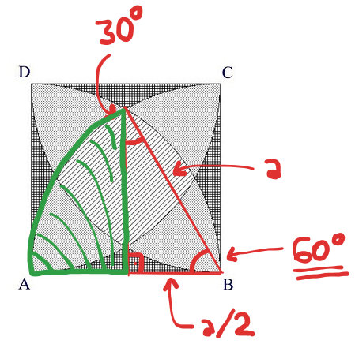

beecrowd 1291 · áreas de setores
Será Isso Integração?
Calcular três tipos de região formados por quatro arcos dentro de um quadrado, sem usar integração numérica.
As três incógnitas
Chamaremos a parte listrada de A₁, a soma das regiões pontilhadas de A₂ e a soma dos cantos quadriculados de A₃. O lado do quadrado é a.
- Quadrado:
Aq = a². - Quarto de círculo:
Ac = πa²/4. - Complementar:
Ap = a² - Ac = (4-π)a²/4.

O segmento circular fecha o sistema
O triângulo destacado tem hipotenusa a, base a/2 e altura
a√3/2. O setor possui 60°, isto é, dois terços de um quarto de círculo.
Asegmento = πa²/6 - a²√3/8 = a²(4π - 3√3)/24
As relações geométricas completas são:
Aq = A₁ + A₂ + A₃
Ac = A₁ + 3A₂/4 + A₃/2
Ap = A₂/4 + A₃/2
Asegmento = A₁/2 + A₂/4 + A₃/8
Ac = A₁ + 3A₂/4 + A₃/2
Ap = A₂/4 + A₃/2
Asegmento = A₁/2 + A₂/4 + A₃/8
Isolando as três áreas:
A₃ = 8Asegmento + 8Ap - 4Aq
A₂ = 4Ap - 2A₃
A₁ = Aq - A₂ - A₃
A₂ = 4Ap - 2A₃
A₁ = Aq - A₂ - A₃
Como as áreas escalam
A₁listrada
A₂pontilhada
A₃quadriculada
Área do quadrado
Segmento circular
A₁ + A₂ + A₃
O ponto-chave
Todas as áreas são uma constante multiplicada por a². Ao dobrar o lado,
cada resultado quadruplica, mas a proporção mostrada na faixa permanece igual.
TempoO(1)
MemóriaO(1)
Saída3 casas
Sistema resolvidoAbrir 1291.py
import math
import sys
def calcular_areas(lado):
# Todas as fórmulas-base são proporcionais ao quadrado do lado.
quadrado = lado * lado
quarto_de_circulo = math.pi * quadrado / 4.0
complementar = quadrado - quarto_de_circulo
segmento = (
quadrado * (4.0 * math.pi - 3.0 * math.sqrt(3.0)) / 24.0
)
# As combinações isolam as três regiões pedidas pelo desenho.
quadriculada = 8.0 * segmento + 8.0 * complementar - 4.0 * quadrado
pontilhada = 4.0 * complementar - 2.0 * quadriculada
listrada = quadrado - pontilhada - quadriculada
return listrada, pontilhada, quadriculada
def main():
# Existe um valor de lado por caso, e a entrada termina em EOF.
lados = map(float, sys.stdin.buffer.read().split())
respostas = [
f"{listrada:.3f} {pontilhada:.3f} {quadriculada:.3f}"
for listrada, pontilhada, quadriculada in map(calcular_areas, lados)
]
sys.stdout.write("\n".join(respostas) + "\n")
if __name__ == "__main__":
main()Fontes e validação
- Explicação e solução C++ originais — decomposição das regiões e sistema de áreas.
- Enunciado no beecrowd — ordem das três áreas na saída.
- Python: constantes matemáticas — valores de
pie funções do módulomath.